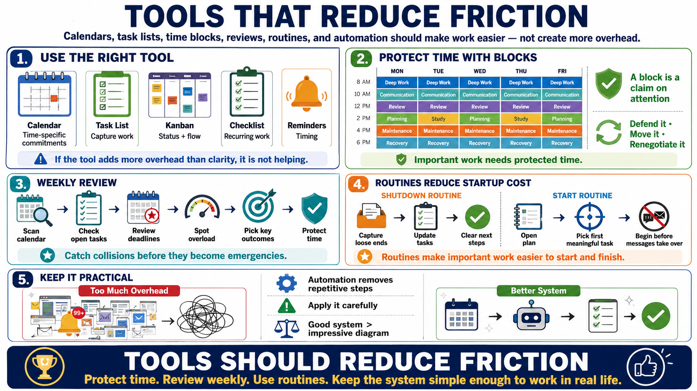

Time Systems, Tools, and Routines
Connecting to LMS... Progress: in progress

Narration
Tools should reduce friction, not become another job to manage. Calendars are useful for time-specific commitments and protected blocks. Task lists are useful for capturing work that should not live in memory. Kanban boards can help show status, limits, and flow. Checklists reduce avoidable misses in recurring work. Reminders help with timing. None of these tools matter if they create more overhead than clarity.
Time blocking is a practical way to reserve periods for the kinds of work that otherwise get crowded out. A block can protect deep work, communication, review, planning, study, maintenance, or recovery. The block is not a guarantee. It is a claim on attention that can be defended, moved, or renegotiated consciously. Without some protected blocks, important work depends on leftover time.
A weekly review turns scattered commitments into a usable picture. It can be simple: scan the calendar, inspect open tasks, review deadlines, look for overloaded days, identify the most important outcomes, and decide what needs protection. The value is not ceremony. The value is catching collisions before they become emergencies and making the next week reflect actual priorities rather than accumulated noise.
Routines make important work easier to start and finish. A shutdown routine can capture loose ends so the mind does not keep carrying them. A start routine can identify the first meaningful task before messages take over. Automation can remove repetitive steps, but it should be applied carefully. The best system is the one that makes good choices easier under real conditions, not the one that looks impressive in a diagram.